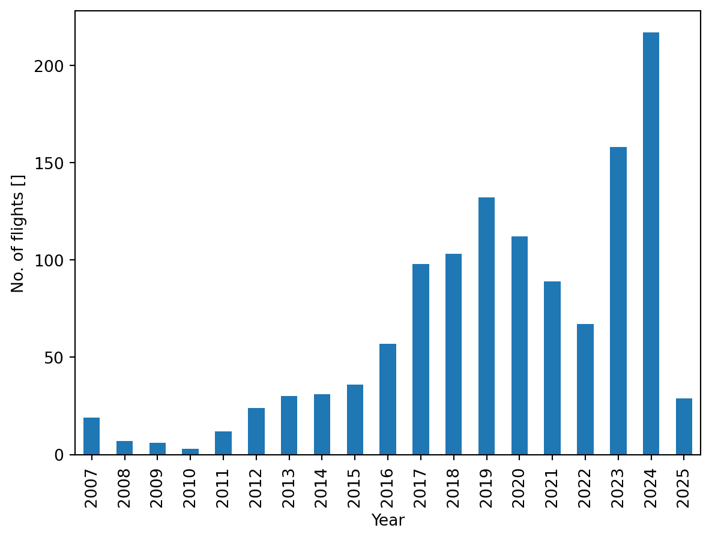
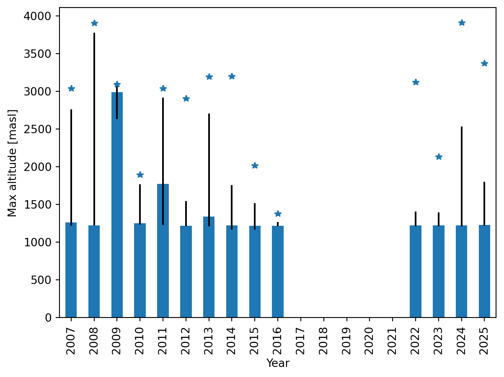
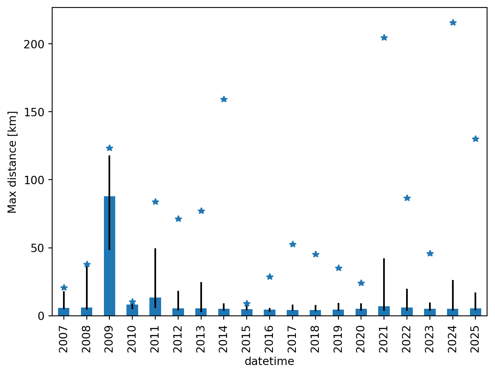
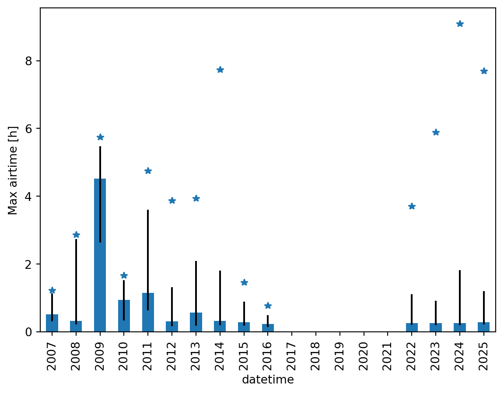
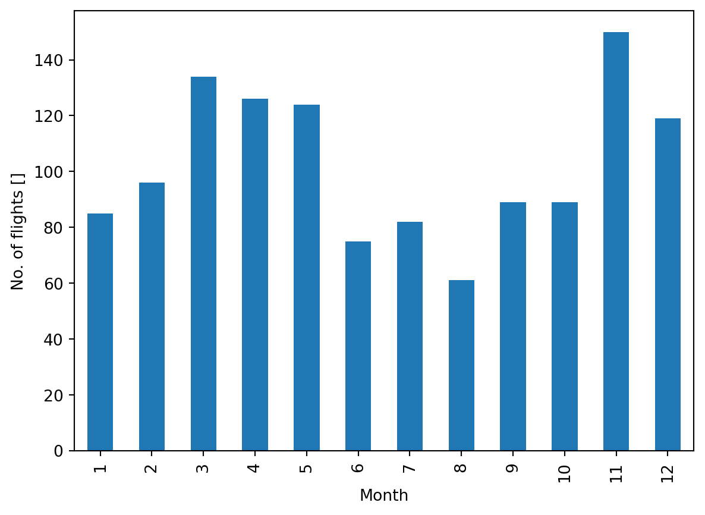
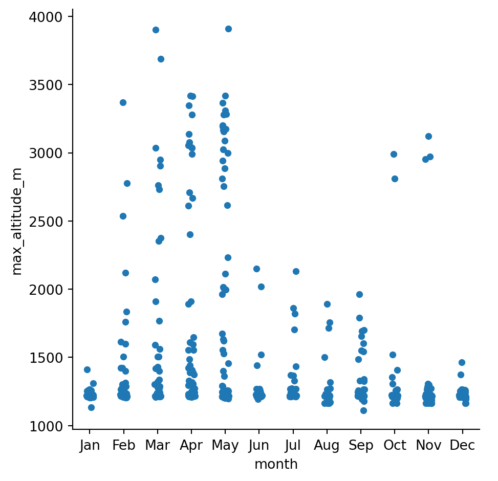
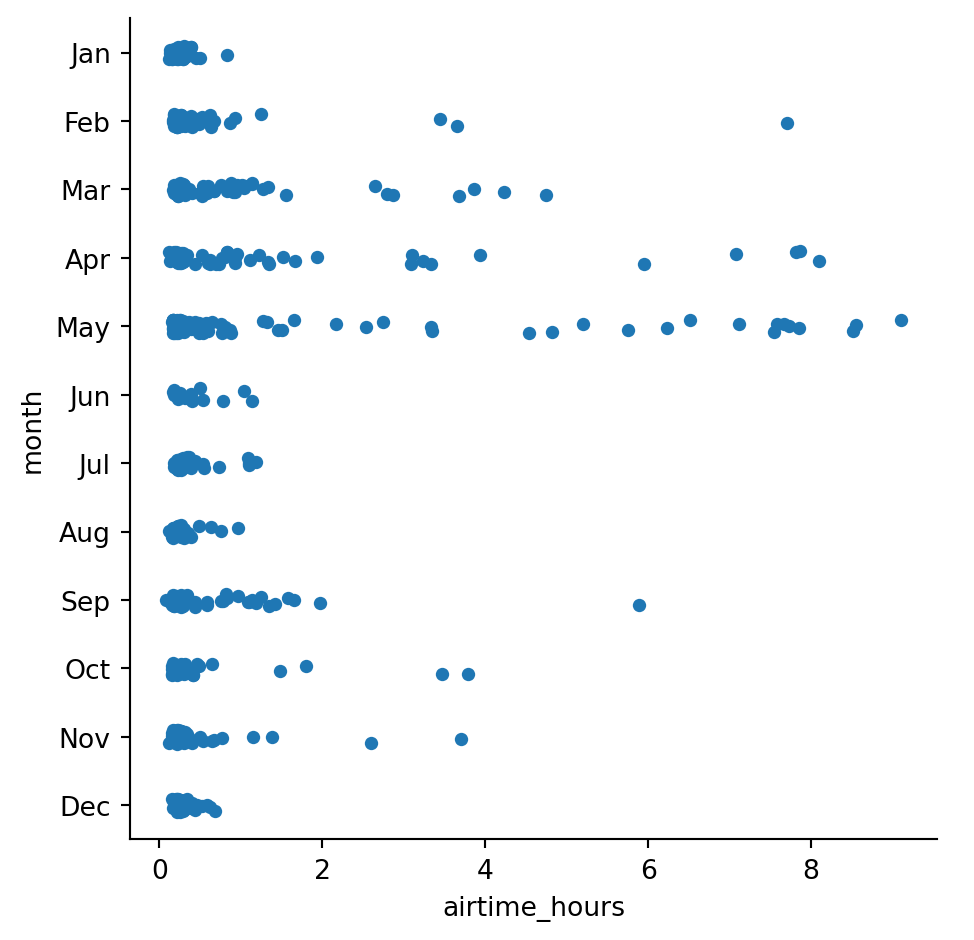

Code
TARGET_SITE_ID = 71200 masl
TARGET_SITE_ID = 7import os
from datetime import datetime, timedelta, timezone
import matplotlib.pyplot as plt
import numpy as np
import pandas as pd
import seaborn as sns
from sqlalchemy import create_engine
db_url = os.environ.get("DATABASE_URL")
db_url = db_url.replace("postgres://", "postgresql://")
engine = create_engine(db_url, echo=False)
cols = ["datetime", "site_id", "length_km", "max_altitude_m", "airtime", "glider_cat"]
df = pd.read_sql("flight", engine, index_col="id", columns=cols)
df = df[df.site_id==TARGET_SITE_ID].drop("site_id", axis=1)
# minimum length: 2 km
df = df[df.length_km > 2]
# maximum altitude: 5000 m
df = df[np.logical_or(df.max_altitude_m < 5000, df.max_altitude_m.isna())]
# minimum altitude: 1000 m
df = df[np.logical_or(df.max_altitude_m > 1000, df.max_altitude_m.isna())]
# exclude rigid wings
df = df.drop(df[df.glider_cat == "HGFAI-1 HG"].index)
df = df.drop(df[df.glider_cat == "RW5FAI-5 RW"].index)
# datetime to date
df["date"] = df.datetime.dt.date
# convert airtime to float
df["airtime_hours"] = df["airtime"] / np.timedelta64(1, 's') / 3600
# no. flights in last 24 hours
df = df.reset_index().sort_values("datetime").set_index("datetime")
df["occurrences_last_24h"] = 1
df["occurrences_last_24h"] = df["occurrences_last_24h"].rolling("24H").sum()
df = df.reset_index().sort_values("id").set_index("id")
# compute the day of the week
df["dayofweek"] = df.datetime.dt.dayofweek
mapday = {0: "Mon", 1: "Tue", 2: "Wed", 3: "Thu", 4: "Fri", 5: "Sat", 6: "Sun"}
df["dayofweek"] = df["dayofweek"].map(mapday)
# compute the month
df["month"] = df.datetime.dt.month
mapmonths = {1:'Jan', 2:'Feb', 3:'Mar', 4:'Apr', 5:'May', 6:'Jun', 7:'Jul', 8:'Aug', 9:'Sept', 10:'Oct', 11:'Nov', 12:'Dec'}
df["month"] = df["month"].map(mapmonths)
# compute the season
df["season"] = df.datetime.dt.month % 12 // 3 + 1
mapseas = {1:'DJF', 2:'MAM', 3:'JJA', 4:'SON'}
df["season"] = df["season"].map(mapseas)sns.set()
# compute reference statistics
ts = df.set_index("datetime").sort_index()
offset_5_years = f"{5 * 365}D"
clim = ts[["max_altitude_m", "length_km", "airtime_hours"]].resample("1D").mean()
clim = clim.groupby(clim.index.isocalendar().week)
clim = clim.rolling(window=offset_5_years, center=False).mean().reset_index(0, drop=True)
clim = clim.sort_index().rolling("15D", center=True).mean()
clim_counts = ts.date.resample("1D").count()
clim_counts = clim_counts.where(clim_counts > 0)
clim_counts = clim_counts.groupby(clim_counts.index.isocalendar().week)
clim_counts = clim_counts.rolling(window=offset_5_years, center=False).mean().reset_index(0, drop=True)
clim_counts = clim_counts.sort_index().rolling("15D", center=True).mean()
clim = clim[clim.index > datetime.now(timezone.utc) - timedelta(days=90)]
clim_counts = clim_counts[clim_counts.index > datetime.now(timezone.utc) - timedelta(days=90)]
dfs = df[df.datetime > datetime.now(timezone.utc) - timedelta(days=90)]
dfg = dfs.groupby(df.date).datetime.count()
fig, axs = plt.subplots(4, sharex=True, figsize=(7, 10))
# reference lines
axs[0].plot(clim_counts.index, clim_counts.values, color="tab:red")
axs[1].plot(clim.index, clim.max_altitude_m, color="tab:red")
axs[2].plot(clim.index, clim.length_km, color="tab:red")
axs[3].plot(clim.index, clim.airtime_hours, color="tab:red")
# plot individual flights
ax0 = sns.scatterplot(x=dfg.index, y=dfg.values, marker="x", ax=axs[0])
ax1 = sns.scatterplot(x="datetime", y="max_altitude_m", marker="x", data=dfs, ax=axs[1])
ax2 = sns.scatterplot(x="datetime", y="length_km", marker="x", data=dfs, ax=axs[2])
ax3 = sns.scatterplot(x="datetime", y="airtime_hours", marker="x", data=dfs, ax=axs[3])
ax0.set(ylabel="No. flights per day")
ax1.set(ylabel="Max altitude [m]")
ax2.set(ylabel="Distance [km]")
ax3.set(ylabel="Airtime [h]")
plt.xticks(rotation=30)
plt.tight_layout()
dfg = df.groupby(df.datetime.dt.year).datetime.count()
ax = dfg.plot(kind="bar", ylabel="No. of flights []", xlabel="Year")
dfg = df.groupby(df.datetime.dt.year).max_altitude_m
med = dfg.median()
err = (np.abs(dfg.quantile([0.1, 0.9]) - med)).unstack()
ax = med.plot.bar(yerr=err.values.T, ylabel="Max altitude [masl]", xlabel="Year")
dfg = df.groupby(df.datetime.dt.year).length_km
med = dfg.median()
err = (np.abs(dfg.quantile([0.1, 0.9]) - med)).unstack()
ax = med.plot.bar(yerr=err.values.T, ylabel="Max distance [km]")
dfg = df.groupby(df.datetime.dt.year).airtime_hours
med = dfg.median()
err = (np.abs(dfg.quantile([0.1, 0.9]) - med)).unstack()
ax = med.plot.bar(yerr=err.values.T, ylabel="Max airtime [h]")
dfg = df.groupby(df.datetime.dt.month).datetime.count()
ax = dfg.plot(kind="bar", ylabel="No. of flights []", xlabel="Month")
ax = sns.catplot(x="month", y="max_altitude_m", order=list(mapmonths.values()), data=df)
ax = sns.catplot(x="length_km", y="month", order=list(mapmonths.values()), data=df)ax = sns.catplot(x="airtime_hours", y="month", order=list(mapmonths.values()), data=df)